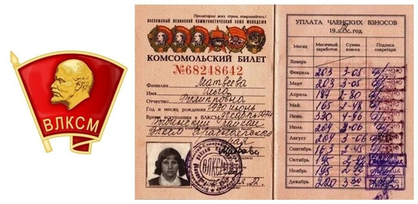

Сводка по датам
Сводка по годам (нажми на меня)
- 1905: Революционные подъемы
- 1905 - 1912: Забастовки
- Первая мировая война и Февральская революция.
- Установление советской власти и контрреволюция
- Легенда о спрятанном сокровище Колчака
- Жертвы
- Репрессии
- Осень 1919
- Комсомольское развитие, пионеры
- Мятеж и последствия гражданской войны
- 1921 - 1930: реформы
- 1932 - 1936
- Действия НКВД
- 1937 - 1939: пред-военное время
- 1941 - 1942: Начало Великой Отечественной войны
- 1941 - 1945: Военная участь
- 1945: После военное время
- 1954 - 1970: После военное время
- 1970 - 1990: Городские преобразования и социальное развитие
- 1990 - 2000: Постсоветский Петропавловск
- 1991 - Петропавловский вальс
1905: Революционные подъемы
Крупнейшим отрядом петропавловского
пролетариата были железнодорожники, насчитывающие к 1906 году до 900 человек. Рабочие
железнодорожных мастерских Петропавловского депо и местные политические ссыльные положили начало
первым марксистским кружкам в депо. Их создавали А. В. Федулин, А. И. Фигин, Е. А.
Анучин, Н. Васильев, М. Н. Казачков, М. Козин и другие.
В кружках изучалась
марксистская литература, велась разъяснительная и агитационная работа среди рабочих.
Постепенно мелкие кружки объединялись, и в 1904 году в депо стал работать один объединённый
социал-демократический кружок, состоявший из передовых рабочих и интеллигенции,
насчитывавший несколько десятков членов.
Возглавил его Георгий Северинович
Нагорничевский, бывший вольнослушатель Томского технологического института. Деятельность
кружка особенно активизировалась в связи с началом русско-японской войны и обострением
революционного кризиса в стране.
В 1905 году Омский комитет РСДРП направил в
Петропавловск бывшего студента Томского медицинского института, профессионального руководителя,
талантливого организатора и пропагандиста Ивана Семеновича Ружейникова (партийная кличка
«Сибиряк»). С его приездом революционная деятельность кружка значительно возросла.
Под
его руководством проводились массовые митинги, собрания в депо и на других предприятиях
города. В сентябре 1905 года И. С. Ружейникову, Г. С. Нагорничевскому и другим членам
руководящего ядра удалось создать в Петропавловске единую социал-демократическую
организацию, именовавшуюся первоначально группой РСДРП, во главе с комитетом из пяти
человек.
1905 - 1912: Забастовки
Крупным политическим выступлением рабочих
была всеобщая забастовка, вспыхнувшая на станции Петропавловск в октябре 1905 года. Под
красным знаменем, с пением революционных песен, рабочие вышли на демонстрацию, которой
руководили члены местной группы РСДРП. Вся работа железнодорожной станции замерла, прекратил
работу телеграф, движение поездов по магистрали остановилось, пропускали лишь воинские эшелоны,
следовавшие с Дальнего Востока.
Полиция и жандармы с помощью солдат местной воинской
команды разогнали забастовщиков. Однако петропавловский пролетариат этой борьбой уже
показал свою сплочённость, классовую сознательность и боеспособность. В феврале 1907 года, после
подавления забастовки рабочих железнодорожного депо, начались массовые аресты.
Для
восстановления разрушенной организации РСДРП, в мае 1907 года Омский комитет направил в
Петропавловск Валериана Владимировича Куйбышева. За короткий срок он наладил выпуск
листовок, проводил собрания, объединил силы городской партийной организации, вовлёк в неё
рабочих промышленных предприятий, учащуюся молодёжь и местную интеллигенцию.
В конце 1907
года петропавловская социал-демократическая организация была разгромлена полицией.
Сохранились лишь небольшие отдельные группы, ушедшие в подполье. С началом нового революционного
подъема в 1912 году в Петропавловске вновь оживляется деятельность РСДРП из числа учащейся
молодёжи и рабочих депо. Организуется также кружок среди местной казахской и татарской
интеллигенции и рабочих во главе с К. Р. Сутюшевым и Г. И. Идрисовым.
Первая мировая война и Февральская революция.
В период первой мировой войны эти
организации вели активную пропаганду, нарастала национально-освободительная борьба трудящихся
казахов, которая вливалась в общий поток борьбы против царского самодержавия.
Весть о
победе Февральской революции дошла до Петропавловска 27 февраля. На следующий день
началась стихийная демонстрация трудящихся города. 2 марта 1917 года состоялся митинг рабочих и
солдат, его участники приветствовали свержение самодержавия и приняли решение арестовать
представителей старой администрации, распустить полицию.
В марте был создан
Петропавловский Совет рабочих и солдатских депутатов (совдеп). Секретарем Совета избрали
члена РСДРП А. М. Поволоцкого — великолепного оратора, человека неугасаемой энергии.
Петропавловский Совет провёл ряд революционных мероприятий: ввёл восьмичасовой рабочий день,
нормирование цен в торговых предприятиях, образовал комиссии для ревизии продовольственных лавок
и установил рабочий контроль.
1917 - 22 ноября 1918
Установлена советская власть. 5 декабря
1917 года первым председателем петропавловской большевистской организации был избран
Исидор Дмитриевич Дубынин. Городской комитет под его председательством в 1917 году
проделал большую работу. Был создан отряд Красной гвардии из рабочих консервного
завода и железной дороги. Отряд насчитывал в своих рядах большевиков и эсеров.
Важным
делом партийной организации стало формирование аппарата управления. В январе 1918 года был
образован Совет народного хозяйства (СОВНАРХОЗ). В его ведение отошли предприятия
промышленности, транспорта, банков и хозяйственных учреждений. В городе действовала
судебно-следственная комиссия, которая выполняла функции прокуратуры и суда, а также
занималась вопросами борьбы с взяточничеством, саботажем, спекуляцией, должностными
преступлениями и контрреволюционной деятельностью.
В составе Ревтрибунала и
судебно-следственной комиссии были И. Н. Кабеков, П. С. Калюжная, М. С. Курнаков, В.
Соловьев и другие. Милицию возглавил большевик Ф. К. Юрасов, военкомом был И. Я.
Филиппенко, начальником штаба — В. С. Трацевский.
По решению Совета в
Петропавловске началась национализация крупнейших промышленных предприятий. В руки
рабочих был передан консервный завод, принадлежавший военному ведомству, а также предприятия
лёгкой и пищевой промышленности: кожевенные заводы Х. А. Акчурина, братьев Зенковых, Т. С.
Микрюкова, мельницы, принадлежавшие местным капиталистам — Астафурову, И. В. Полякову и
другим.
Вскоре почти вся промышленность Петропавловска была национализирована.
Проводилась реквизиция купеческих домов с целью размещения советских учреждений и улучшения
жилищных условий трудящихся. В некоторых из этих домов и поныне размещаются государственные
учреждения. Так, в доме капиталиста Т. Л. Аркела находится областной
историко-краеведческий музей. Владелец держал в нём большой магазин готового платья, а на
втором этаже гостиницу.
Первые шаги Советской власти были прерваны разгуливанием
контрреволюции. В ночь на 31 мая 1918 года в городе вспыхнул белочехословацкий мятеж,
который сомкнулся с контрреволюционными силами. Малочисленные отряды Красной гвардии
не смогли противостоять крупным силам контрреволюции. Город оказался в руках мятежников. Они
захватили консервный завод, заняли все крупные учреждения, арестовали членов совдепа и
начали кровавую расправу над активными деятелями Советской власти. В течение нескольких дней
по городу шли облавы и обыски. Арестовали более тысячи человек. Задержанных доставляли к
зданию станичного правления. Здесь, после короткого допроса и избиений, их распределяли по
местам заключения. Над некоторыми из большевиков исступлённые контрреволюционеры творили
самосуд. Так был убит на улице города Карим Сутюшев — один из руководителей
Петропавловского совдепа.
Легенда о золоте Колчака
В 1918 году, во время Гражданской войны,
Белая армия под командованием Колчака контролировала обширные территории Сибири. Основным
источником финансирования Белого движения было золотое обеспечение, захваченное в
Казанском банке после отступления большевиков. Это золото, известное как "Золотой
запас Российской империи", было эвакуировано в Сибирь и хранилось в различных
городах, чтобы обеспечить Белую армию необходимыми ресурсами для ведения боевых
действий.
К началу 1920 года ситуация для Колчака и его войск начала ухудшаться:
большевики теснили их на восток, и Белая армия вынуждена была отступать через Сибирь в
условиях суровой зимы. Колчак с остатками своих войск отступал вдоль Транссибирской
магистрали, перевозя золото, которое должно было помочь им организовать новое
сопротивление. Одним из возможных мест для временной передислокации был Петропавловск,
который оказался на их пути.
Согласно легенде, когда стало очевидно, что большевики
приближаются к Петропавловску, а силы Белой армии иссякают, было принято решение спрятать
золото в окрестностях города, чтобы оно не досталось врагу. Местом для клада якобы
стали пещеры или скрытые места в степях или горах поблизости. Некоторые утверждают, что
золото могли спрятать в болотах, чтобы скрыть его окончательно.
Говорят, что
только несколько доверенных офицеров Колчака знали точное местонахождение золота. Однако, в
ходе дальнейших боевых действий и развала Белой армии, эти люди погибли, забрав с собой
тайну места захоронения сокровищ
Может вы станете тем кто найдет спрятанное сокровище?
Жертвы
Без суда была решена судьба 22-х активных
представителей Советской власти. Ранним утром 10 июня над ещё спящим городом в Пятом
логу прозвучало несколько залпов. Так трагически оборвалась жизнь 22-х борцов. Их
имена навсегда останутся в памяти народной: А. И. Быстрицкий, К. Гапонов,
П. С. Голубов, И. Дубынин, Заикин, Е. Т. Зимин, А. И.
Иванов, В. Н. Иванов, В. Землянский, Г. И. Идрисов, Р.
Ицерохес, П. С. Калюжная, Ф. П. Кочкарев, И. Коломейченко,
И. Люстерник, Я. С. Побелянский, А. М. Прокофичева, П. Е. Рыжов,
П. П. Темлянцев, В. С. Трацевский, И. Я. Филиппенко, Ф. Е.
Шананин.
Рассказывают, что Настя Прокофичева, идя на казнь, нашла в
себе силы сорвать по дороге несколько незабудок и в этом скромном букетике спрятала записки
к матери и товарищам.
Репрессии
Аресты и репрессии охватили Сибирь и Северный
Казахстан. Временным сибирским правительством были отменены все законодательные акты
Советской власти, а национализированные промышленные предприятия и крупная собственность
возвращены прежним хозяевам. Более полутора лет в Петропавловске и его уезде свирепствовал
жесточайший белый террор. Город представлял собой в 1918-1919 годах крупнейший лагерь
контрреволюционной военщины. Здесь формировались белоказачьи части генерала Волкова и
казачья запасная бригада полковника Катанаева, располагались штабы белочешского соединения
генерала Гайды и нескольких колчаковских корпусов. Рассказывают, что на воротах дома, где
находился известный своей жестокостью атаман Ненков, развевался черный флаг с изображением
черепа и скрещенных костей.
Дикие расправы белоказачьих карателей над
населением: всевозможные налоги, грабежи, мародёрство, насилие, мобилизация мужчин в белую
армию, реквизиция лошадей, хлеба, одежды — все это подтверждало жестокую сущность
колчаковского режима.
Широкая партизанская борьба и восстания рабочих в
Петропавловске приблизили конец контрреволюции и окончательную победу Советской
власти.
Петропавловские большевики, несмотря на тяжелые условия белого террора,
продолжали руководить борьбой народных масс. Им удалось создать подпольные молодежные
группы. Летом 1918 года на квартире у Лёки Чайко по ул. Управской собрались девять человек.
Они обсудили сложившуюся ситуацию и организовали группу сопротивления — «девятку». В
состав группы вошли: А. К. Бочагов, И. Дмитриев, Д. Минаков, В. М. Мурзинцев, Я. П.
Резвушкин, А. Резчиков, П. П. Сафронов, А. Скворцов, А. Чайко.
Руководящим ядром
подпольной организации стали: Пётр Сафронов, Яков Резвушкин, Архип
Бочагов. Затем возникла вторая «девятка», руководителем которой стал Яков Резвушкин.
Собирались они, как правило, в доме у Резвушкина по ул. Пушкинской в слободской части
города. После создания второй «девятки», первую центральную стали называть «райкой»
(районной организацией), а вновь созданную — «подрайкой» (подрайонной
организацией).
В сентябре 1918 года образовалась ещё одна группа — «лятерка»,
руководство которой было поручено А. Лобыкину. Члены молодежных организаций, помимо изучения
революционной литературы, занимались практической работой по подрыву тыла колчаковской
армии.
Осенью 1919 года Красная Армия развернула широкое наступление на
Восточном фронте против армии Колчака и интервентов.
1919: Осень
В ночь на 29 октября 1919 года началось наступление
Красной Армии с двух направлений: главного вдоль Сибирской железной дороги на
Петропавловск силами 5-й армии под командованием М. Н. Тухачевского, и
вспомогательного вдоль железной дороги Ялуторовск-Ишим силами 3-й армии (командарм С. А.
Меженинов). Со стороны белых участвовали Самарская и Симбирская дивизии 3-й
армии.
Бригада под командованием С. Д. Павлова из 35-й дивизии (комдив К.
А. Нейман) заняла исходное положение для форсирования реки и штурма города. В первом
эшелоне действовал 308-й полк под командованием А. А. Глазкова. Колчаковцы подожгли
деревянный мост через Ишим. Комбриг С. Павлов бросил вперед красноармейцев. Помощник
начальника пулеметной команды «Кольт» 307-го полка Иван Яковлевич Смирнов, несмотря
на смертельную опасность, бросился на мост, увлекая за собой бойцов, которые под непрерывным
обстрелом белогвардейцев сумели шинами потушить огонь. Мост был спасен. Бойцы ринулись на
штурм города. После горячих схваток они ворвались в Петропавловск.
Утром 30 октября
колчаковцы при поддержке двух бронепоездов предприняли контрнаступление крупными
кавалерийскими частями в обход бригады. Завязались ожесточенные бои. Однако красноармейцы не
отдали город. В итоге трехдневных боев с 29 по 31 октября 35-я дивизия при поддержке других
соединений 5-й армии освободила город Петропавловск от колчаковцев. За этот подвиг
Реввоенсовет наградил С. Д. Павлова и И. Я. Смирнова орденами Красного
Знамени. Улицы под городом — Красная и Подгорная — названы в их
честь.
18 ноября 1919 года вновь была создана партийная организация. Политотдел 5-й
армии выделил для работы среди молодежи группу товарищей. Эта группа вместе с новыми членами
активно продолжила работу по укреплению партийных позиций в регионе.
Первая комсомольская организация на севере республики

19 декабря состоялось первое собрание, на котором был
принят план образования КСМ и избран комитет комсомола. Организация росла и крепла, из ее
рядов вышло немало заслуженных людей. Антонин Степанович Южаков, выпускник
Ленинградского политехнического института, работал начальником Второго государственного
проектного института в Ленинграде. В 1950 году ему была присуждена Государственная премия
СССР.
Петропавловск стал родиной первого в Казахстане пионерского
отряда. 19 ноября 1922 года в городе был организован отряд юных пионеров имени Спартака,
объединивший 33 пионера. Организатором отряда стал член губкома РКСМ Константин Аксенов.
Первые шаги пионерии сопровождались множеством трудностей, так как на улицах города было много
беспризорников. Пионеры, вместе с комсомольцами, старались привлечь этих ребят. Постепенно
движение расширялось и росло.
Через год пионерия насчитывала девять отрядов, объединявших
около 80 пионеров. В марте 1924 года количество отрядов увеличилось до 25, охватывая уже 1069
детей.
Мятеж и последствия гражданской войны
После окончания гражданской войны перед городом
открылись перспективы мирного труда. Однако восстанавливать народное хозяйство приходилось в
крайне трудной обстановке: не хватало продовольствия, транспорта, сырья, топлива. Тяжелое
положение в городе пыталась использовать в своих интересах контрреволюция, проводя
антисоветскую пропаганду.
В феврале 1921 года вспыхнул кулацко-белогвардейский мятеж
в Западной Сибири, который быстро распространился и захватил волости Петропавловского уезда.
Город был переведен на военное положение, и был сформирован коммунистический отряд для
борьбы с контрреволюцией. Однако, несмотря на принятые меры, защитить город не удалось, и 13
февраля банды ворвались в Петропавловск. Начались массовые расправы над коммунистами и
сочувствующими Советской власти.
Подошедшие из Омска части Красной Армии, при
поддержке бронепоезда, совместно с защитниками города, сосредоточившимися в районе
консервного завода и привокзального поселка, 15 февраля выбили мятежников из города. В марте
и апреле происходили похороны жертв мятежа. В братской могиле на Октябрьской площади
покоятся 217 активных борцов за Советскую власть.
После подавления восстания
партийные и советские органы мобилизовали трудящихся на решение задач хозяйственного и
культурного строительства. Этот переломный момент в жизни города совпал с переходом
Северного Казахстана в состав Киргизской (Казахской) АССР. 26 апреля 1921 года на основании
декрета ВЦИК было опубликовано постановление Чрезвычайной комиссии КирЦИК, согласованное с
Сибирским ревкомом. В нем говорилось, что уезды Петропавловский, Кокчетавский, Акмолинский и
Атбасарский, выйдя из состава Омской губернии, образовали Акмолинскую губернию в составе
Казахстана, с центром в Петропавловске.
В годы гражданской войны хозяйство города
пришло в упадок. Промышленные предприятия были разрушены, оборудование консервного завода
вывезено колчаковцами. Царили разруха и голод. Восстановительный период ознаменовался вводом
в действие ряда промышленных предприятий. В августе 1923 года после опустошительных событий
гражданской войны и разрухи, консервный завод был отремонтирован и возобновил свою работу.
Мокатный завод им. Парижской Коммуны также был модернизирован — его старое оборудование и
машины были заменены новыми.
1921 - 1930: реформы
Особое внимание уделялось строительству железной
дороги, которая была начата в рамках проекта "Петропавловск-Кокчетав" (Петрокок), а также
развитию государственных мельниц. Промышленное строительство активно велось с 1921 года,
главным образом через коренную реконструкцию старых предприятий, их оснащение новой техникой
и расширение ассортимента выпускаемой продукции. В результате таких преобразований
производственные мощности увеличивались в несколько раз. Уровень промышленного производства
значительно вырос, почти достигнув уровня 1913 года.
В 1928 году произошло важное
административное изменение — было ликвидировано деление на губернии, уезды и волости, вместо
чего было установлено новое деление на округа и районы. Акмолинская губерния перестала
существовать, а её территория была разделена на несколько округов, включая Петропавловский
округ, куда вошли Петропавловский, Кокчетавский и часть Атбасарского уездов. В 1930 году
Петропавловск стал центром Петропавловского района, а в феврале 1932 года — административным
центром Карагандинской области, в состав которой вошли города Петропавловск, Кокчетав,
Акмолинск, Атбасар и Караганда.
В годы первой пятилетки (1928-1932) в Петропавловске
развернулось масштабное строительство. В 1928 году были введены в эксплуатацию новые цеха на
мясоконсервном заводе. В следующем году завершилось строительство холодильника и
двухэтажного корпуса убойно-разделочного цеха. В 1930 году была введена в строй мощная
электростанция, что способствовало дальнейшему развитию предприятия. Параллельно велось
активное жилищное строительство.
К 1932 году Петропавловский консервный завод, после
значительной реконструкции и расширения, стал крупнейшим мясокомбинатом в Советском Союзе.
Реконструированный чугунолитейный завод уже мало походил на прежнее кустарное предприятие,
которым был до революции. Достаточно напомнить, что в начале 1920-х годов на заводе работало
всего 43 рабочих, а после реконструкции их количество достигло 700.
1932 - 1936
Важное значение для развития экономики Северного
Казахстана имело завершение строительства железнодорожной магистрали
Петропавловск-Караганда. 10 июля 1922 года было открыто движение до Кокчетава, а 1
октября 1927 года — до Борового. В августе 1931 года вступила в строй линия
Боровое-Караганда.
В 1936 году, с появлением новых промышленных и культурных
центров в Казахстане, существующие области и районы были разделены. 29 июля 1936 года
Карагандинская область была разделена на две: Карагандинскую с административным центром в
Караганде и Северо-Казахстанскую с центром в Петропавловске. В октябре 1939 года
часть районов Карагандинской области и часть районов Северо-Казахстанской области образовали
Акмолинскую область. Северо-Казахстанская область окончательно сформировалась в 1944
году, когда пять районов и город Кокчетав были переданы новосозданной Кокчетавской
области.
В 1930-1950-е годы в стране искусственно нагнетались репрессивные
меры против инакомыслящих и неугодных. Процветали наушничество, доносы, подозрительность.
Выискивались враги народа, шпионы, вредители. Подозреваемых судили по 58-й статье
«тройки», они же и определяли наказание. Для этой цели была создана целая сеть тюрем
и лагерей. Вот как выглядела структура ГУЛАГа, созданная НКВД:
Структура ГУЛАГа
- ОКБ - особые конструкторские бюро, прозванные шарашками, где работали репрессированные ученые, конструкторы.
- ИТЛ - исправительно-трудовые лагеря.
- ТОН - тюрьмы особого назначения.
- ПИ - политизоляторы (существовали в 1923-1936 годах).
- Этапы - пересыльные тюрьмы.
Действия НКВД
Пересыльные тюрьмы НКВД в Петропавловске были жестоким
местом. Областное управление НКВД находилось в здании на улице Пушкина, а в 1940-х годах
управление лагерями находилось в доме купца 1-й гильдии Г. И. Казанцева. В это время здесь
размещалось управление спецпереселения и ОМЗ (отдел мест заключения) — начальники Шкеля и
Сонин.
Политзаключенные в пересыльных тюрьмах, как правило, не задерживались на
длительный срок. Иногда можно было увидеть колонну осужденных, грязных и оборванных, по
шесть человек в ряд, следовавших по улице под вооруженной охраной с овчарками. Затем
осужденные перевозились в «телячьих» вагонах с двухъярусными нарами, покрытыми соломой, по
железной дороге до окончательного места назначения. Через Петропавловский этап прошли
десятки тысяч осужденных.
Некоторые партии политзаключенных вывозили вечером на
подводах за город и там расстреливали. В районе Вороний остров стали местами массовых
расстрелов жертв сталинских репрессий. По предварительным подсчетам, в Петропавловске было
расстреляно более 3-х тысяч осужденных. Следы преступлений умело скрывались;
документы уничтожались, а те, кто имел прямое отношение к репрессиям, либо ссылались, либо
исчезали. К документам «Хранить вечно!» пока доступа нет, поэтому точно сказать, сколько и
кто был расстрелян в пригородах Петропавловска, к великому сожалению, не представляется
возможным.
Можно привести фамилии некоторых осужденных, отбывавших наказание в
Петропавловске или области. Так, ленинградская поэтесса Елена Владимировна Тагер отбывала
наказание в Северо-Казахстанской области, актриса Зоя Федорова в селе Полудино. Татьяна
Владимировна Барклай (правнучка М. Б. Барклая де Толли), 1893 года рождения, ленинградская
учительница, отбывала ссылку в Ленинском районе с 1948 по 1955 год. Жена М. Н. Тухачевского
работала кассиром в парикмахерской в селе Явленке. Сергей Яковлевич Влахенберг — известный
художник, в 1950-х годах отбывал ссылку в Петропавловске.
История пересыльных тюрем НКВД в Петропавловске
В Петропавловске действовали пересыльные тюрьмы, которые использовались для временного содержания осужденных, ожидающих отправки в лагерь. Эти тюрьмы часто были переполнены, условия содержания были крайне тяжелыми. Осужденные перевозились в «телячьих» вагонах с минимальным комфортом. Место назначения для многих заключенных было неизвестно, и условия транспортировки оставляли желать лучшего.Репрессированные невинные:
- Н. С. Кузнецов — первый секретарь Северо-Казахстанского обкома компартии, репрессирован в 30-х годах.
- Френкин Зиновий Соломонович (1900-1938) — зав. отделом народного образования облисполкома, подвергнут репрессиям.
- Сегизбаев Султан (1898-1941) — первый секретарь Северо-Казахстанского обкома компартии с марта по октябрь 1937 года, арестован как враг народа.
- Жамбулатов Абушахман (1899-1937) — третий секретарь Петропавловского горкома компартии в 1937 году, снят с работы, исключен из партии, объявлен врагом народа.
- Целых Федот Павлович (1896-1986) — в 1938 году председатель Северо-Казахстанского облисполкома, депутат Верховного Совета СССР, подвергся репрессиям, в 1956 году реабилитирован.
- В Петропавловске проходил процесс над группой тружеников: A. M. Гаменюк, И. И. Гребешок, Исаков, С. Г. Калугин, К. Капаров, С. Конюхов, А. Майкотов, С. Отепов, Н. Уразбаев, К. Фазылов, обвиняемых в контрреволюционно-троцкистской и национал-фашистской деятельности.
1937 - 1939: пред-военное время
С началом Второй мировой войны
(1 сентября 1939 года) в Петропавловске появились польские переселенцы. В годы
Великой Отечественной войны в город и область были переселены немцы, чеченцы и
ингуши. Репрессивные меры затронули не только партийных и советских работников, но и простых
тружеников.
За годы довоенных пятилеток в Петропавловске произошли значительные изменения
в промышленности. Мелкие полукустарные заводики исчезли, уступив место современным
предприятиям, таким как мясокомбинат, чугунолитейный завод,
валяльно-войлочная фабрика им. Парижской Коммуны, кожевенный завод им. Октябрьской
Революции. Петропавловск стал крупным железнодорожным узлом.
Грузооборот
по железным дорогам области в 1940 году увеличился почти в три раза по сравнению с
1934 годом.
В области народного образования также произошли значительные
изменения. До революции в Петропавловске было только два средних учебных заведения:
реальное училище и женская гимназия. К 1940 году почти 90% населения
стало грамотным. Только за 1937-1938 годы в городе построено шесть двухэтажных семилетних и
средних школ.В 1937 году открылся учительский институт. В нем перед войной обучалось
около 400 студентов. Появилось несколько техникумов: сельскохозяйственный,
железнодорожного транспорта, учетно-экономический, педучилище и
фельдшерско-акушерская школа, в которой в 1940 году обучалось 400
человек.
Численность населения Петропавловска в предвоенные годы значительно
увеличилась и составляла 91,7 тысячи человек.
1941 - 1942: Начало Великой Отечественной войны
В суровые годы Великой Отечественной
войны трудники Петропавловска встали на фронтовую вахту. На фабриках и заводах
широко развернулось социальное соревнование под лозунгом: "Работать не ленись!" В
результате самоотверженного труда предприятия города выполняли и перевыполняли
производственные задания.
С августа 1941 года в Петропавловск стали прибывать
эвакуированные предприятия. Город принял коллективы и технику двадцати заводов, фабрик и
строительных организаций. Нужно было разместить и обеспечить быстрый ввод в строй
эвакуированных предприятий, разместить тысячи прибывших рабочих, служащих и их семьи. В этих
целях партийные и профсоюзные органы мобилизовали горожан на массовые воскресники. В
результате упорного труда некоторые эвакуированные предприятия уже к концу 1941 года
дали первую продукцию.
С первых дней войны тысячи североказахстанцев мужественно
сражались в рядах Красной Армии на разных фронтах, покрыв свой боевой путь неувядаемой
славой. Воины-североказахстанцы воевали в героической Панфиловской дивизии. Тысячи наших
земляков были призваны в боевые полки 310-й и 29-й стрелковых дивизий, 152-й и 36-й
стрелковых бригад. Немало их сражалось в составе 72-й и 150-й стрелковых дивизий.
Война,
к счастью, не докатилась до наших краев, но слезы и горе ее вошли почти в каждый дом. В
лихую годину земля североказахстанская отрывала от себя все самое дорогое, а главное —
людей. Только в грозный 41-й более 40 тысяч сынов и дочерей земляков
североказахстанцев ушло на фронт. Кроме того, несколько тысяч человек были призваны и
направлены на работу на предприятия оборонной промышленности.
1941 - 1945: Военная участь
В июле 1941 года в Петропавловске
началось формирование 314-й стрелковой дивизии из жителей Северо-Казахстанской
области. Возглавил её Шеменков Афанасий Дмитриевич, с 1942 по 1944 год
дивизией командовал генерал Алиев Иван Михайлович. В сентябре 1941 года
дивизию направили на один из важных участков фронта, и уже в первых боях с врагом воины
проявили исключительное мужество и героизм.
Дивизия, сформированная из
североказахстанцев, проделала славный боевой путь: участвовала в героической обороне
Ленинграда, защищая Дорогу жизни, проходившую по Ладожскому озеру;
принимала активное участие в прорыве блокады Ленинграда, в уничтожении линии
Маннергейма. С 1943 года дивизия участвует в наступательных боях под
Выборгом, а затем на Кёнигсбергском направлении. В феврале 1944 года
приказом Верховного Главнокомандующего за освобождение города Кингисеппа 314-й
стрелковой дивизии присвоено наименование Кингисеппской. В составе 1-го
Украинского фронта дивизия участвовала в боях на польской и чехословацкой землях.
Родина высоко оценила боевые подвиги дивизии, наградив её орденом Кутузова.
С
начала войны до декабря 1941 года в Петропавловске было подготовлено свыше 1000
стрелков, пулеметчиков, мотоциклистов и телеграфистов. Областная организация
Красного Креста готовила медсестер, санитарок. Многие из них добровольно ушли на
фронт. Женщины и девушки города становились донорами, заменяли мужчин, ушедших защищать
Родину.
Коллектив железнодорожников Петропавловского паровозного депо осенью 1941
года начал строительство бронепоезда. Броневые листы поступали из
Челябинского металлургического завода. Трудились с большим напряжением, не считаясь со
временем и усталостью. В строительстве принимали участие десятки рабочих, инженеров и
техников. Особо отличились мастер Н. П. Гаврилов, бригадир Ф. Н. Никитин,
слесарь-арматурщик Н. А. Бек, токари М. Лапин, П. Черкасов,
газосварщики С. Романов, Н. Тарасов и другие. В декабре 1941 года
бронепоезд был построен и ему присвоено наименование «Североказахстанец». С 1942
года и до конца войны он героически сражался с немецко-фашистскими захватчиками под
Москвой и Сталинградом. Летом 1945 бронепоезд был направлен на восток, громить японских
самураев. Горячая забота трудящихся города о сборе теплых вещей и средств для армии с первых
дней войны нашла яркое выражение в помощи фронтовикам. Трудящиеся города стали вносить
деньги в фонд обороны. Средства направлялись на торпедные катера, эскадрильи истребителей,
танковые колонны. Высокий патриотизм проявили железнодорожники. Только за 1941 год
они собрали для Красной Армии 4372 теплые вещи и внесли в фонд обороны около
миллиона рублей.
За годы войны значительно выросла промышленность города. Наряду с
существующими предприятиями появились новые — эвакуированные из западных районов страны:
табачно-махорочная фабрика, завод маломощных двигателей, швейная фабрика
"Комсомолка", завод электроизоляционных материалов им. М. И. Калинина,
машиностроительные заводы им. С. М. Кирова и В. В. Куйбышева и ряд других
предприятий. Были построены спиртоводочный и чугунолитейный заводы, ТЭЦ-1,
реконструирован хлебокомбинат.
1945: После военное время
Окончилась война. Перед страной встали
трудные задачи восстановления народного хозяйства и дальнейшего его развития. Советский
народ с воодушевлением взялся за претворение в жизнь первого послевоенного пятилетнего
плана. За этот период промышленное производство Петропавловска значительно
расширилось.
За годы пятой пятилетки увеличилось число промышленных предприятий города.
Были построены и введены в строй кирпичный завод с годовой мощностью 7 миллионов штук
кирпича, макаронный цех хлебокомбината. За это же время значительно расширили
производственные площади завод маломощных двигателей, швейная фабрика "Комсомолка",
предприятия местной и кооперативной промышленности. Получило дальнейшее развитие в городе
жилищное и культурное строительство.
Особенно изменился облик Петропавловска за последние
два десятилетия. Выросло много новых предприятий, расширены и реконструированы старые. Город
украсили современные здания жилого, культурно-бытового и административного назначения.
1954 - 1970: После военное время
В начале 1950-х годов в Советском Союзе
началась амбициозная программа по освоению целинных и залежных земель. Эта инициатива стала
частью политики, направленной на увеличение сельскохозяйственного производства и обеспечение
продовольственной безопасности страны. В рамках программы по освоению целины было
организовано массовое переселение людей из других регионов страны в Северный Казахстан.
Тысячи семей, в том числе из центральных областей России, приехали в Петропавловск и его
окрестности. Они занимались разработкой новых сельскохозяйственных угодий, которые ранее
считались непригодными для ведения сельского хозяйства.
Новые поселенцы сталкивались
с суровыми климатическими условиями и сложными природными условиями. Работа на целине была
крайне тяжелой, но благодаря усилиям и упорству людей удалось превратить эти земли в
продуктивные сельскохозяйственные угодья.
Освоение целины дало значительный толчок
развитию сельского хозяйства в регионе. Были построены новые фермерские хозяйства,
зернохранилища, механизированные комплексы. Основное внимание уделялось производству зерна,
которое стало основным продуктом сельского хозяйства.
Развивались и новые
сельскохозяйственные технологии. Внедрение механизации и новых агротехнических методов
позволило повысить урожайность и улучшить эффективность работы на новых
землях.
Петропавловск и его окрестности играли важную роль в этом процессе,
так как регион был одним из центров нового земледельческого освоения.
Переезд и
освоение новых земель привели к значительным социальным и экономическим изменениям в
регионе. Петропавловск, став важным центром для новой волны освоения, увидел рост населения
и развитие инфраструктуры. Построенные новые жилые районы, школы и медицинские учреждения
улучшили условия жизни для переселенцев и местных жителей.
Однако, несмотря на
значительные успехи, освоение целины также сталкивалось с проблемами, такими как нехватка
необходимых ресурсов и трудности с адаптацией к новым условиям. К концу 1950-х годов
правительство и местные органы начали пересматривать подходы к освоению, чтобы учесть
возникающие сложности и повысить эффективность программы. В конце 1950-х и 1960-х годов
Петропавловск продолжал наращивать темпы промышленного развития. Город стал важным
промышленным центром региона. Были построены новые заводы и фабрики, такие как завод
электроизоляционных материалов и машиностроительные заводы, что способствовало росту
экономики. В это время также началась модернизация существующих предприятий. Старые заводы и
фабрики реконструировались и переоснащались, что позволяло улучшить качество продукции и
увеличить объёмы производства. Город постепенно преображался, украсившись новыми
современными зданиями и инфраструктурой.
1970 - 1990: Городские преобразования и социальное развитие
С 1970-х годов Петропавловск стал
активно развиваться не только в промышленном, но и в социальном плане. Были построены новые
жилые кварталы, культурные учреждения и объекты социальной инфраструктуры. В
это время город активно развивался, укреплялись связи с соседними регионами.
В
1980-е годы, несмотря на экономические трудности, связанные с общими проблемами в
стране, Петропавловск продолжал развиваться. В городе улучшилось жилищное
обеспечение, была построена новая школа, медицинские учреждения, и
расширены культурные возможности.
1990 - 2000: Постсоветский Петропавловск
С распадом Советского Союза и началом
1990-х годов Петропавловск, как и многие другие города постсоветского пространства,
столкнулся с глубокими переменами и вызовами. Период был отмечен как экономическими
трудностями, так и значительными преобразованиями в социальной и инфраструктурной
сферах.
Экономические перемены: В 1990-е годы экономика Петропавловска, как и
всей страны, переживала переходный период от плановой экономики к рыночной. Многочисленные
предприятия, ранее поддерживаемые государством, оказались в сложной ситуации. В некоторых
случаях производственные мощности были приостановлены или закрыты, что привело к высоким
уровням безработицы и экономическим трудностям.
Преобразования в
промышленности: Несмотря на трудности, в этот период также наблюдались попытки
диверсификации и адаптации местной экономики. Была проведена приватизация государственных
предприятий, а также началась реструктуризация промышленных объектов. Некоторые предприятия
были успешно модернизированы или преобразованы в частные компании, что дало новый импульс
для экономического роста.
Социальные изменения: В социальной сфере произошли
значительные изменения. Начало 1990-х годов было временем социальной нестабильности, но
также и началом реформ. Были предприняты шаги по улучшению системы образования,
здравоохранения и социальных услуг. В городе были построены новые школы и медицинские
учреждения, что способствовало улучшению качества жизни населения.
Развитие
инфраструктуры: В 1990-е годы Петропавловск также сосредоточился на развитии
инфраструктуры. Восстанавливались и строились новые дороги, улучшалось водоснабжение и
водоотведение. Особое внимание уделялось модернизации жилищного фонда и улучшению жилищных
условий для жителей города.
Культурное развитие: В этот период также
происходили изменения в культурной жизни города. Открывались новые культурные центры,
библиотеки и театры. Городская культура переживала возрождение и привлекала внимание к
традициям и современным достижениям.
Международные связи: Постсоветский период
способствовал укреплению международных связей. Петропавловск начал активно сотрудничать с
другими странами, что способствовало экономическому и культурному обмену. Город стал более
открытым для иностранных инвесторов и партнеров, что способствовало его интеграции в
глобальную экономику.
Таким образом, в 1990-2000 годах Петропавловск пережил
значительные изменения, преодолевая трудности переходного периода и создавая основу для
дальнейшего развития в новом постсоветском контексте.
Петропавловский вальс
Автор: Геннадий Диброва
Куда отправимся дальше?
Может настало время проверить себя?
Ох уж эти проверки знаний, вопросы не легки, но и ты не страшись! в городе
ПогрузитьсяО текущей архитектуре и памятниках в Петропавловске
Архитектура уникальна, а памятники и по сей день стоят и символизируют прошлое Петропавловска
Исследовать